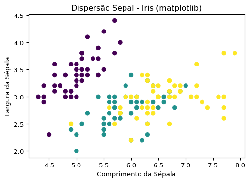
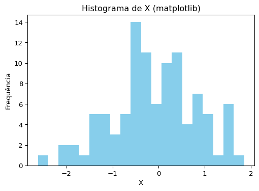
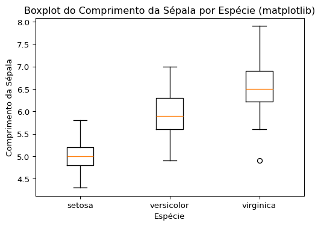
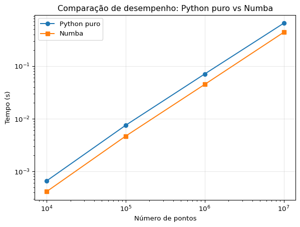

import seaborn as sns
import numpy as np
import pandas as pd
iris = sns.load_dataset("iris")
np.random.seed(42)
df_random = pd.DataFrame({
"x": np.random.normal(size=100),
"y": np.random.normal(size=100)
})Terceira Avaliação - Visualização e Aceleração Computacional em Python
Introdução
O propósito deste trabalho é de apresentar a aplicação prática de duas ferramentas que são consideradas fundamentais no ambiente Python: a library matplotlib/plotnine, destinada à visualização de dados, e a ferramenta numba, voltada para a otimização e aceleração computacional. Gostaríamos de enfatizar que estas são ferramentas bastante utilizadas em todas as áreas da ciência de dados, da estatística e, também, na modelagem matemática.
Matplotlib/plotnine: Estas ferramentas, de fato, possibilitam a produção de gráficos que são bastante informativos, o que facilita, de maneira significativa, o processo de análise exploratória e a subsequente comunicação dos resultados obtidos.
Numba: Tem como função principal fornecer a otimização de códigos e funções Python, especialmente em situações que envolvem operações matemáticas que são, digamos, intensivas, utilizando o recurso de compilação Just-In-Time (JIT).
Parte 1 - Visualização de Dados em Python
Conjuntos de Dados
Para exemplificar as técnicas de visualização, foram utilizados dois conjuntos de dados: o clássico iris, disponível no pacote seaborn, e um conjunto sintético gerado aleatoriamente.
Visualizações com Matplotlib
O pacote matplotlib é uma das bibliotecas mais tradicionais para visualização em Python, oferecendo grande flexibilidade e controle sobre os elementos gráficos.
import matplotlib.pyplot as plt
# Dispersão do conjunto iris
plt.figure(figsize=(6,4))
plt.scatter(iris["sepal_length"], iris["sepal_width"], c=iris["species"].astype("category").cat.codes)
plt.title("Dispersão Sepal - Iris (matplotlib)")
plt.xlabel("Comprimento da Sépala")
plt.ylabel("Largura da Sépala")
plt.show()
# Histograma dos dados sintéticos
plt.figure(figsize=(6,4))
plt.hist(df_random["x"], bins=20, color="skyblue")
plt.title("Histograma de X (matplotlib)")
plt.xlabel("X")
plt.ylabel("Frequência")
plt.show()
# Boxplot do comprimento da sépala por espécie
plt.figure(figsize=(6,4))
plt.boxplot([iris[iris["species"] == sp]["sepal_length"] for sp in iris["species"].unique()],
labels=iris["species"].unique())
plt.title("Boxplot do Comprimento da Sépala por Espécie (matplotlib)")
plt.xlabel("Espécie")
plt.ylabel("Comprimento da Sépala")
plt.show()

C:\Users\felix\AppData\Local\Temp\ipykernel_8960\1479246110.py:21: MatplotlibDeprecationWarning:
The 'labels' parameter of boxplot() has been renamed 'tick_labels' since Matplotlib 3.9; support for the old name will be dropped in 3.11.

Visualizações com Plotnine
O pacote plotnine é inspirado na gramática dos gráficos do ggplot2 (R), permitindo a construção de visualizações de forma mais declarativa e intuitiva.
from plotnine import ggplot, aes, geom_point, geom_histogram, geom_boxplot, labs, theme_minimal
# Dispersão do conjunto iris
plot1 = (
ggplot(iris, aes(x="sepal_length", y="sepal_width", color="species"))
+ geom_point()
+ labs(title="Dispersão Sepal - Iris (plotnine)", x="Comprimento da Sépala", y="Largura da Sépala")
+ theme_minimal()
)
print(plot1)
# Histograma dos dados sintéticos
plot2 = (
ggplot(df_random, aes(x="x"))
+ geom_histogram(bins=20, fill="skyblue")
+ labs(title="Histograma de X (plotnine)", x="X", y="Frequência")
+ theme_minimal()
)
print(plot2)
# Boxplot do comprimento da sépala por espécie
plot3 = (
ggplot(iris, aes(x="species", y="sepal_length", fill="species"))
+ geom_boxplot()
+ labs(title="Boxplot do Comprimento da Sépala por Espécie (plotnine)", x="Espécie", y="Comprimento da Sépala")
+ theme_minimal()
)
print(plot3)<ggplot: (672 x 480)>
<ggplot: (672 x 480)>
<ggplot: (672 x 480)>Análise Comparativa:
A abordagem imperativa do matplotlib oferece maior detalhamento e personalização, enquanto a sintaxe declarativa do plotnine facilita a criação rápida de gráficos estatísticos. O boxplot, por exemplo, evidencia as diferenças de distribuição do comprimento da sépala entre as espécies do conjunto iris.
Parte 2 - Aceleração Computacional com Numba
Aproximação de Pi pelo Método de Monte Carlo
O método de Monte Carlo é uma técnica probabilística utilizada para estimar o valor de π. A seguir, apresenta-se a implementação em Python puro e a versão otimizada com Numba.
Implementação em Python
import time
def monte_carlo_pi(n):
x = np.random.rand(n)
y = np.random.rand(n)
dentro = (x**2 + y**2) <= 1
return 4 * np.sum(dentro) / n
n_amostras = 10**7
start = time.time()
pi_py = monte_carlo_pi(n_amostras)
tempo_py = time.time() - start
print(f"Pi (Python puro): {pi_py:.6f} | Tempo: {tempo_py:.3f}s")Pi (Python puro): 3.141577 | Tempo: 0.497sImplementação com Numba
A função abaixo utiliza o decorador @njit do Numba para compilar o código em tempo de execução, acelerando o processamento.
from numba import njit
import random
@njit
def monte_carlo_pi_numba(n):
dentro = 0
for _ in range(n):
x = random.uniform(0, 1)
y = random.uniform(0, 1)
if x**2 + y**2 <= 1:
dentro += 1
return 4 * dentro / n
start = time.time()
pi_numba = monte_carlo_pi_numba(n_amostras)
tempo_numba = time.time() - start
print(f"Pi (Numba): {pi_numba:.6f} | Tempo: {tempo_numba:.3f}s")
print(f"Aceleração: {tempo_py/tempo_numba:.2f}x")Pi (Numba): 3.140958 | Tempo: 1.317s
Aceleração: 0.38xAvaliação de Desempenho para Diferentes Tamanhos de Amostra
Para comparar o desempenho das duas abordagens, foram realizados testes com diferentes tamanhos de amostra.
import matplotlib.pyplot as plt
ns = [10**4, 10**5, 10**6, 10**7]
tempos_py = []
tempos_numba = []
for n in ns:
start = time.time()
monte_carlo_pi(n)
tempos_py.append(time.time() - start)
start = time.time()
monte_carlo_pi_numba(n)
tempos_numba.append(time.time() - start)
plt.plot(ns, tempos_py, label='Python puro', marker='o')
plt.plot(ns, tempos_numba, label='Numba', marker='s')
plt.xscale('log')
plt.yscale('log')
plt.xlabel('Número de pontos')
plt.ylabel('Tempo (s)')
plt.title('Comparação de desempenho: Python puro vs Numba')
plt.legend()
plt.grid(True, alpha=0.3)
plt.show()
Discussão dos Resultados:
Os resultados demonstram que o Numba proporciona ganhos significativos de desempenho, especialmente para grandes volumes de dados. Para amostras pequenas, a diferença é menos perceptível, mas à medida que o número de pontos aumenta, a aceleração se torna evidente.
Conclusão
A utilização das bibliotecas matplotlib e plotnine mostrou-se eficiente para a visualização de dados, cada uma com suas particularidades de sintaxe e estilo.
O Numba, por sua vez, destacou-se como uma ferramenta poderosa para otimização de funções matemáticas intensivas, tornando o Python ainda mais competitivo para aplicações científicas e de engenharia.
A integração dessas ferramentas é recomendada para profissionais e estudantes que desejam aprimorar suas análises e simulações em ciência de dados.